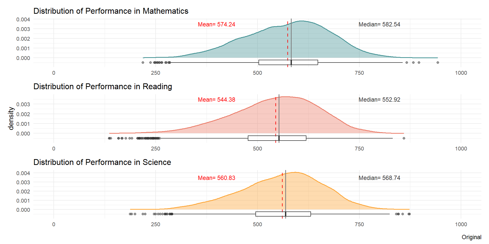
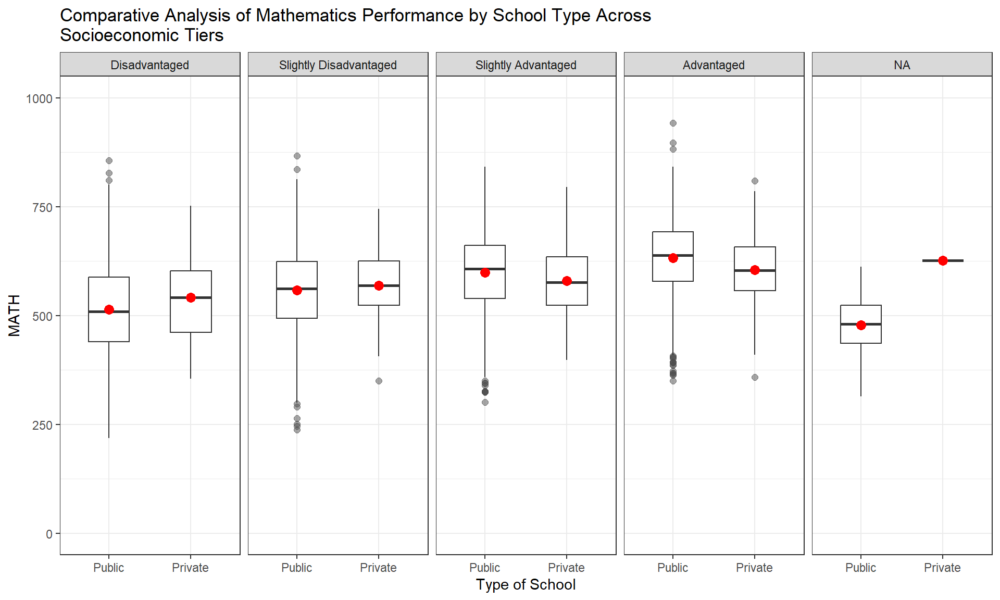
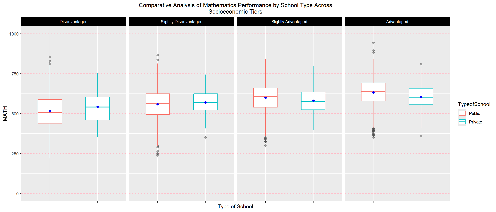

In this take-home exercise, we will be selecting an classmates take-home exercise 1 and do the following:
critic the submission in terms of clarity and aesthetics (of the graphs),
prepare a sketch for the alternative design by using the data visualisation principles and best practices we learnt in Lesson 1 and 2, and,
remake the original design by using ggplot2, ggplot2 extensions and tidyverse packages.
2: Data Preparation
Based on the above task, the classmate selected will be Lim Jia Jia’s take-home exercise 1. We will be following her steps in data prep to obtain her data so that we can replicate her plots and further enhance it.
Code Chunk
# Loading R packagespacman::p_load(tidyverse, haven, patchwork, ggdist, ggrain, ggridges)# Importing PISA datastu_qqq <-read_sas("data/cy08msp_stu_qqq.sas7bdat")# Data Extractionstu_qqq_SG <- stu_qqq %>%filter(CNT =="SGP")write_rds(stu_qqq_SG, "data/stu_qqq_SG.rds")stu_qqq_SG <-read_rds("data/stu_qqq_SG.rds")stu_qqq_SG# Using select() and rename() from dplyr to select the column and rename the variable for claritystu_qqq_SG_selected <- stu_qqq_SG %>%select('CNTSTUID','STRATUM','ST004D01T','ESCS','PV1MATH','PV1READ','PV1SCIE') %>%rename(StudentID = CNTSTUID,TypeofSchool = STRATUM,Gender = ST004D01T,MATH = PV1MATH,READ = PV1READ,SCIENCE = PV1SCIE)#Setting up the final table and saving the data for Exploratory Data Analysis
This section, I will be evaluating five of the graphs which Jia Jia has created in her take-home exercise 1.
For each of the graph, both clarity and aesthetics will be assessed. After the assessment, a generated graph and code will be shown on the improvements.
3.1 Graph 1 - Distribution of Performance in Mathematics, Reading and Science
Code Chunk
# Distribution of Performance in MathematicsP1 <-ggplot(data = stu_qqq_SG_converted,aes(x = MATH)) +geom_density(color ="#459395", size =0.6, fill="#459395", alpha =0.4) +coord_cartesian(xlim =c(0,1000)) +geom_vline(aes(xintercept =mean(MATH)),color ="red", alpha =0.8, linewidth =0.7, linetype ="dashed") +annotate("text", x =400, y =0.0035,label =paste("Mean=", round(mean(stu_qqq_SG_converted$MATH, na.rm=T), 2)),color ="red", size =3) +geom_vline(aes(xintercept =median(MATH)),color="grey50", linewidth =0.7, linetype ="solid") +annotate("text", x =800, y =0.0035,label =paste("Median=", round(median(stu_qqq_SG_converted$MATH, na.rm=T), 2)),color ="grey20", size =3) +geom_boxplot(width =0.0005, fill ="white", alpha =0.5,position =position_nudge(y =-0.0005)) +theme_minimal()+labs(title="Distribution of Performance in Mathematics") +theme(axis.title.x =element_blank(),axis.title.y =element_blank(),plot.title=element_text(size=12),axis.text =element_text(size=8)) # Distribution of Performance in ReadingP2 <-ggplot(data = stu_qqq_SG_converted,aes(x = READ)) +geom_density(color ="#EB7C69", size =0.6, fill="#EB7C69", alpha =0.4) +coord_cartesian(xlim =c(0,1000)) +geom_vline(aes(xintercept =mean(READ)),color ="red", alpha =0.8, linewidth =0.7, linetype ="dashed") +annotate("text", x =400, y =0.0035,label =paste("Mean=", round(mean(stu_qqq_SG_converted$READ, na.rm=T), 2)),color ="red", size =3) +geom_vline(aes(xintercept =median(READ)),color="grey50", linewidth =0.7, linetype ="solid") +annotate("text", x =800, y =0.0035,label =paste("Median=", round(median(stu_qqq_SG_converted$READ, na.rm=T), 2)),color ="grey20", size =3) +geom_boxplot(width =0.0005, fill ="white", alpha =0.5,position =position_nudge(y =-0.0005)) +theme_minimal()+labs(title="Distribution of Performance in Reading",y ="density") +theme(axis.title.x =element_blank(),plot.title=element_text(size=12),axis.text =element_text(size=8)) # Distribution of Performance in ScienceP3 <-ggplot(data = stu_qqq_SG_converted,aes(x = SCIENCE)) +geom_density(color ="#FDA638", size =0.6, fill="#FDA638", alpha =0.4) +coord_cartesian(xlim =c(0,1000)) +geom_vline(aes(xintercept =mean(SCIENCE)),color ="red", alpha =0.8, linewidth =0.7, linetype ="dashed") +annotate("text", x =400, y =0.0035,label =paste("Mean=", round(mean(stu_qqq_SG_converted$SCIENCE, na.rm=T), 2)),color ="red", size =3) +geom_vline(aes(xintercept =median(SCIENCE)),color="grey50", linewidth =0.7, linetype ="solid") +annotate("text", x =800, y =0.0035,label =paste("Median=", round(median(stu_qqq_SG_converted$SCIENCE, na.rm=T), 2)),color ="grey20", size =3) +geom_boxplot(width =0.0005, fill ="white", alpha =0.5,position =position_nudge(y =-0.0005)) +theme_minimal()+labs(title="Distribution of Performance in Science") +theme(axis.title.x =element_blank(),axis.title.y =element_blank(),plot.title=element_text(size=12),axis.text =element_text(size=8)) P1 / P2 / P3

Based on the graph above, the assessment for both clarity and aesthetics described in the table below.
Assessment Criteria
Assessment Outcome
Possible Improvements
Clarity
The data is displayed accurately with the mean and median line provided for context. The distribution of each graph provides an approximate understanding of the type of distribution based on each performance metric. An additional boxplot below it provides additional understanding of the outliers.
To improve on the graph, the titles can be removed and each axis to label the performance metric is for. Additionally, a histogram can be added into the background to provide how accurate the density diagram correlates to the distribution as the density plot approximates the shape.
Aesthetics
The graph is shown well using varying colours to separate the three different performance metrics. The mean and median are also clearly labeled with different colours to differentiate each other.
The titles for each graph can be shortened to use the Axis labels instead and an overall title can be used for all three graphs. Additionally, instead of using grey for the median line, a brighter more distinct colour can be used. Another improvement is to increase the size of the charts as they are all cramped together and do not look pleasing.
Based on each of the graphs, the information is clear and easy to read and understand
The mean value is missing and does not allow to understand how different are the means. For graph 5, as there are more than 2 box plots per performance value, the mean value would be difficult to place - hence it will not be added. What can be improved is to either plot three individual ones or reduce the number of bins for ESCS. The “NA” values have also been removed.
Aesthetics
The overall aesthetic is good and clean with not much clutter except for graph 4 which has multiple bins.
To further improve, I’ve changed the colour scheme and added a legend for all 3 instead of using the axis text which were repetitive. Additionally, the graphs were enlarged so that it can be viewed better. For all three plots, the dot representing the mean was also reduced in size as it was too big in comparison with the plots. For Graph 5, instead of having the plots next to each other, they were plot below instead and given individual legends.
3.3 Graph 5 - Relationship Between Performances in Mathematics and School Type Across Different Socioeconomic Status
Code Chunk
ggplot(data= stu_qqq_SG_converted,aes(x= TypeofSchool, y= MATH)) +geom_boxplot(width=0.5, outlier.colour ="grey30", outlier.size =2, outlier.alpha =0.5, outlier.shape =19) +stat_summary(geom ="point", fun.y="mean", colour ="red", size=3) +coord_cartesian(ylim =c(0,1000)) +facet_grid(~ binned_ESCS) +labs(title=str_wrap("Comparative Analysis of Mathematics Performance by School Type Across Socioeconomic Tiers"),x ="Type of School") +theme(plot.title=element_text(size=12, hjust= .5),axis.text =element_text(size=10)) +theme_bw()

Assessment Criteria
Assessment Outcome
Possible Improvements
Clarity
The initial chart is clear on depicting the varying mean based on the type of school according to their socioeconomic status
To further enhance the clarity, the plot with NA has been removed. Additionally, major gridlines across the y-axis has also been added for value clarity.
Aesthetics
The chart is clear and minimal with not much clutter of information
The x-axis labels have been removed and a legend has been added. Colours were also added to clearly differentiate between public and private across all panels. The panel text and background have been changed to make it stand out more. The dot representing the mean has also been reduced slightly and colour has been changed to not clash with the box colours.
3.3.1 Graph and Code of Improvement
Improved Code
ggplot(data= stu_qqq_SG_converted %>%filter(stu_qqq_SG_converted$binned_ESCS !="NA"),aes(x= TypeofSchool, y= MATH, colour= TypeofSchool)) +geom_boxplot(width=0.5, outlier.colour ="grey30", outlier.size =2, outlier.alpha =0.5, outlier.shape =19) +stat_summary(geom ="point", fun.y="mean", colour ="blue", size=2) +coord_cartesian(ylim =c(0,1000)) +facet_grid(~ binned_ESCS) +labs(title=str_wrap("Comparative Analysis of Mathematics Performance by School Type Across Socioeconomic Tiers"),x ="Type of School") +theme(plot.title=element_text(size=12, hjust= .5),axis.text.x =element_blank(),panel.grid.major.y =element_line(color="pink", linetype =2),strip.background =element_rect(fill ="black"),strip.text =element_text(colour ="white"))

4: Learning Points
After reviewing my classmates exercise, there are a few points on visualization learnt below:
Every individual has a different opinion on how data should be presented, in order to ensure clarity we should always stick to the following method of questioning the graph:
What is the information I want to get across to the user?
Is it simple enough to understand?
Does it misconstrue the facts being presented?
Is the information being shared sufficient or can it be broken down even further?
Every individual has a different preference in terms of aesthetics, for e.g. Jia Jia prefers the mean indicators to be larger so that it can clearly be seen and would like to show all information possibly in the graphs, regardless of variables. This may cause information overload and make it seem cluttered even though the intention is good. Addititionally, she makes use of a lot of black, white and grey themed charts to show her information which is very clean. However, I am more visual and can link information through the varying colours across different charts. It makes it easier to deduce and compare against other information more efficiently. Hence, what I learnt is that we need to cater to both kinds of individuals to ensure the information can be brought across elegantly and efficiently through aesthetics.